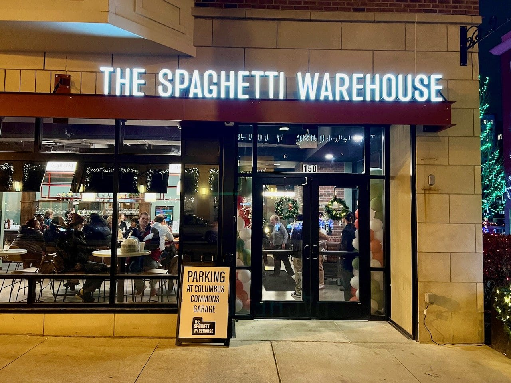
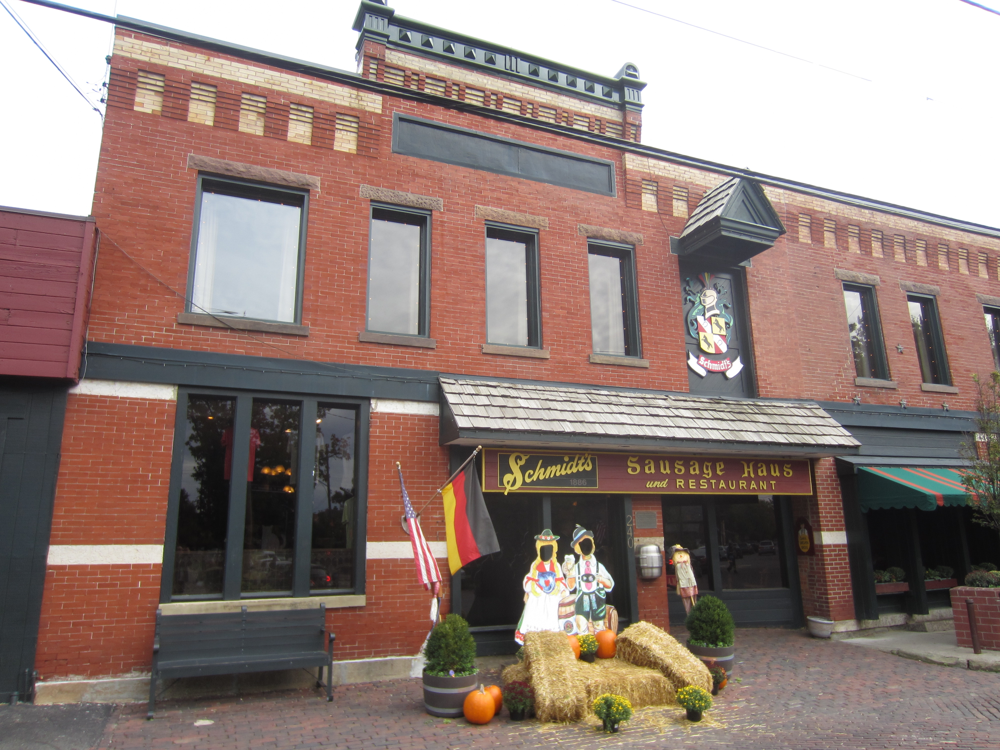
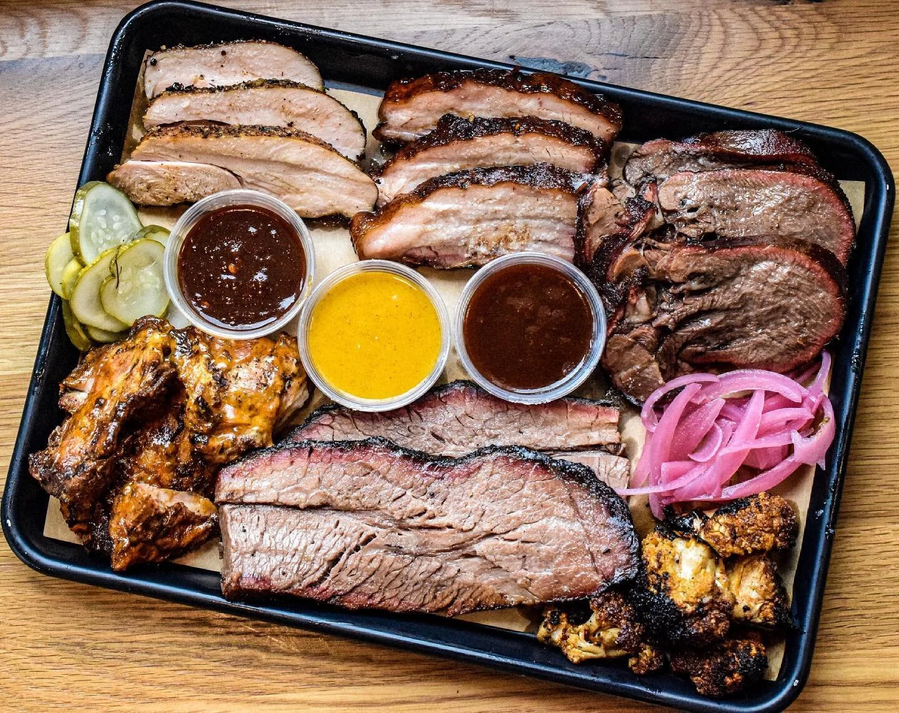
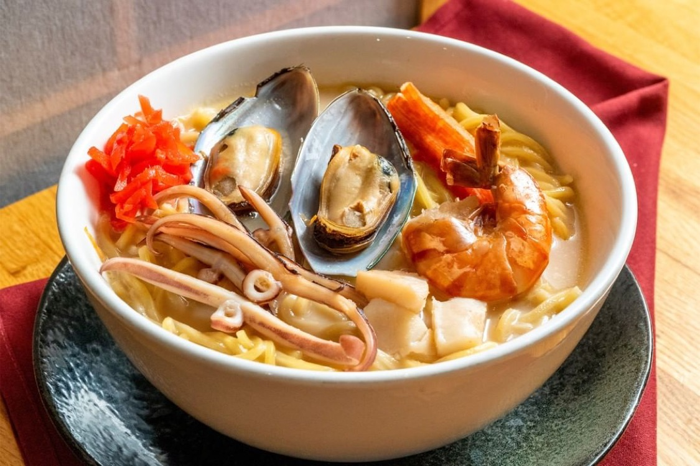
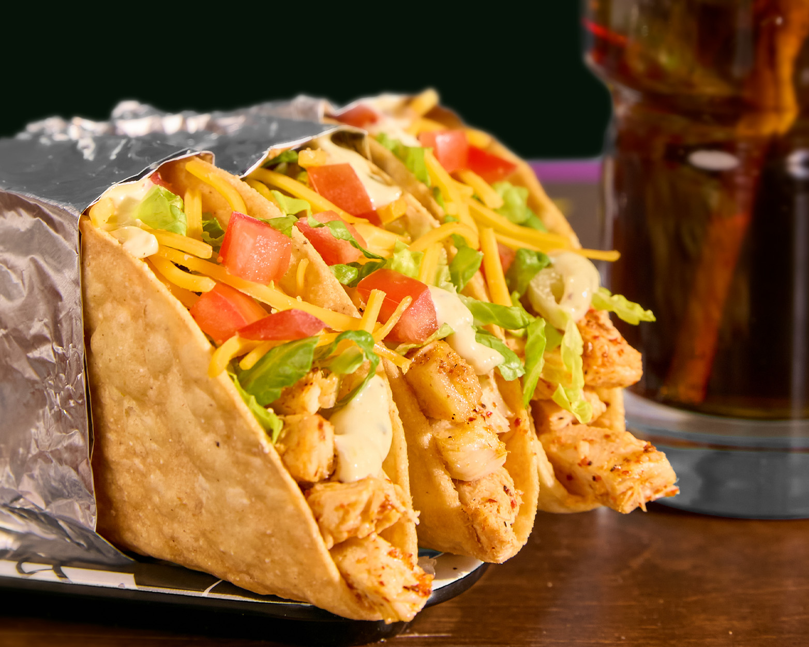

Restaurants
Columbus is filled with many great restaurants with tasty food!
The Spaghetti Warehouse
Visit WebsiteThe Spaghetti Warehouse is a beloved American-Italian restaurant with origins dating back to 1972. Known for generous portions and a fun retro atmosphere, it's a Columbus staple for casual Italian dining.
Menu & Pricing
| Category | Average Price Range |
|---|---|
| Appetizers | $10 - $15 |
| Pasta & Entrees | $16 - $26 |
| Soups & Salads | $10 - $15 |
| Desserts | $12 |
| Drinks | $3 |
Location & Hours
- Location: 150 S High St, Columbus, OH 43215
- Hours of Operation: Sun - Wed: 11AM - 8PM | Thu - Fri: 11AM - 9PM | Sat: 11AM - 10PM

Schmidt's Sausage Haus
Visit WebsiteLocated in the heart of historic German Village, Schmidt's has been a Columbus staple since 1886. It is famous for its authentic German buffet, award-winning sausages, and giant half-pound cream puffs.
Menu & Pricing
| Category | Average Price Range |
|---|---|
| Sausage Platters | $16 - $19 |
| Sandwiches | $12 - $16 |
| Famous Desserts | $7 - $9 |
Location & Hours
- Location: 240 E Kossuth St, Columbus, OH 43206
- Hours of Operation: Sun - Mon: 11AM - 9PM | Tue - Sat: 11AM - 10PM

North Market (Downtown)
Visit WebsiteThe North Market is a vibrant public market that features over 30 independent merchants. It's the best spot to find a variety of international cuisines, fresh local produce, and unique gifts all under one roof.
Merchant Categories
| Category | What You'll Find |
|---|---|
| International Cuisine | Somali, Vietnamese, Nepalese, and more |
| Bakery & Sweets | Fresh donuts, pretzels, and artisan chocolates |
| Fresh Goods | Local butchers, fishmongers, and florists |
Location & Hours
- Location: 59 Spruce St, Columbus, OH 43215
- Hours of Operation: Sun - Mon: 10AM - 5PM | Tue - Sat: 9AM - 7PM

Ray Ray's Hog Pit
Visit WebsiteRay Ray's is widely considered some of the best BBQ in Ohio. Starting as a food truck, it's known for its wood-fired meats and "meat sweats" platters that draw crowds every weekend.
Menu & Pricing
| Category | Average Price Range |
|---|---|
| Smoked Meats (by the lb) | $21 - $36 |
| Sandwiches | $5 - $10 |
| Sides & Extras | $3.50 - $13.50 |
Location & Hours
- Location: 4214 N High St, Columbus, OH 43214
- Hours of Operation: Tue - Sun: 11AM - 8:30PM | Mon: Closed

Akai Hana
Visit WebsiteA premier destination for traditional Japanese cuisine, Akai Hana is famous for its high-quality sushi and authentic atmosphere. It is part of the "Japan Marketplace" which includes a Japanese grocery and bakery.
Menu & Pricing
| Category | Average Price Range |
|---|---|
| Sushi & Sashimi | $6 - $31 |
| Japanese Entrees | $14 - $23 |
| Ramen & Noodle Soups | $9 - $21 |
Location & Hours
- Location: 1173 Old Henderson Rd, Columbus, OH 43220
- Hours of Operation: Mon - Thu: 5PM - 9PM | Fri - Sat: 4PM - 9PM | Sun: 4PM - 8PM

Condado Tacos
Visit WebsiteCondado is a high-energy spot known for its build-your-own taco concept and vibrant mural-covered walls. It's a favorite for its creative shells, diverse protein options, and famous queso dips.
Menu & Pricing
| Category | Average Price Range |
|---|---|
| Build-Your-Own Tacos | $5 - $7 per taco |
| Signature Bowls | $12 - $18 |
| Queso & Dips | $6 - $8 |
Location & Hours
- Location: 1227 N High St, Columbus, OH 43201
- Hours of Operation: Sun - Thu: 11AM - 11PM | Fri - Sat: 11AM - 12AM
